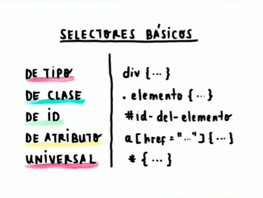

tema seleccionado selectores Css
Los selectores funcionan para darle estilos a la pagina ejemplo a la fuente, los colores, fondos, bordes, márgenes y
relleno.
permiten seleccionar elementos específicos en una página web
La cascada de CSS es la forma en la que el navegador interpreta nuestra hoja de estilos, resolviendo las
declaraciones CSS y los posibles conflictos entre ellas.
La herencias css : heredan automáticamente de un elemento Por ejemplo, el color de fuente
Combinadores. Selecciona los elementos que se encuentran dentro de otros, cuando se encuentra entre las
etiquetas de apertura y de cierre del otro elemento.
Los atributos permiten seleccionar elementos que tienen un atributo específico o un valor de atributo
específico
En general, los selectores CSS son una parte esencial del diseño web y permiten a los desarrolladores
crear páginas web personalizadas , atractivas y llamativas
¿Cuáles son los selectores basicos de CSS?
Los selectores basicos son: DE TIPO, DE CLASE, DE ID, DE ATRIBUTO y UNIVERSAL
Cómo usar selectores en CSS
Existen dos formas posibles de emplear selectores en CSS. Si tienes en un mismo documento tu código en
HTML
y tu código en CSS, lo único que tienes que hacer es añadir los selectores CSS en la cabecera (< head>)
de
tu sitio. En el ejemplo que te presentamos más abajo puedes ver cómo funciona este método.
Si, por el contrario, tu HTML y tu CSS están en documentos separados, quizá tendrás un documento
etiquetado como index.html y otro como style.css. El archivo index.html deberá incluir una línea de
código que haga un llamado al archivo CSS para que los estilos se muestren en tu sitio web
correctamente.